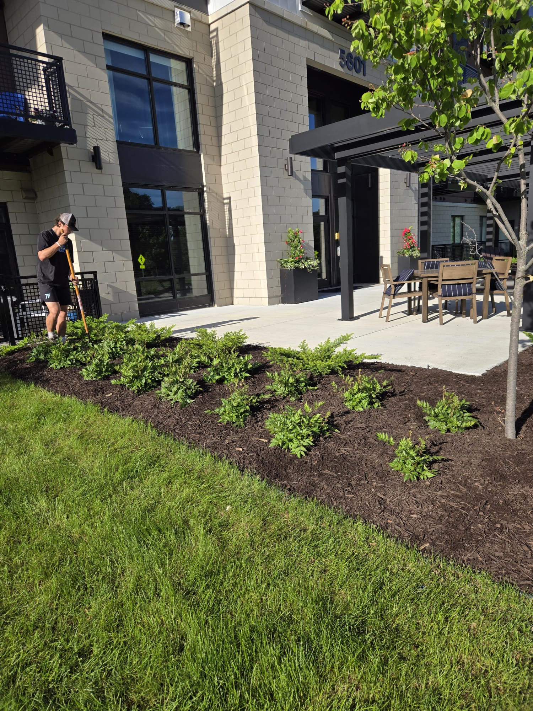
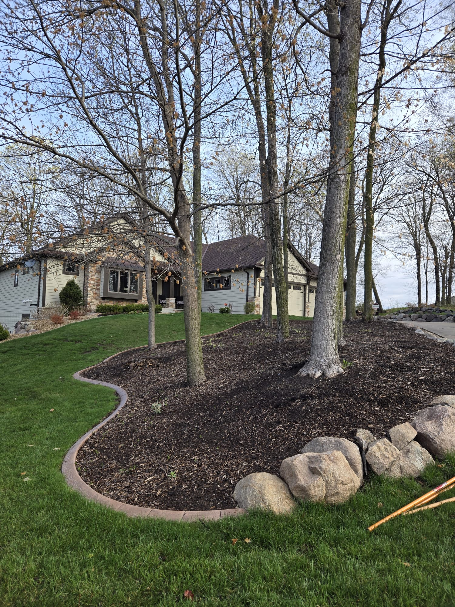

About Freshly Mulched
A family-built business rooted in community, driven by quality, and growing stronger every season for over 10 years.
Born from a Love of the Land
Freshly Mulched was founded in 2014 by Marcus and Diane Holloway, lifelong central Ohio residents with a shared passion for landscaping and a frustration with unreliable, overpriced mulch suppliers. Marcus had spent nearly a decade as a landscaping foreman, and Diane brought her background in small business management. Together, they decided to build something better.
What started as a single delivery truck and a small inventory yard has grown into a fleet of six trucks, a three-acre materials operation, and a team of 12 dedicated professionals. We now serve hundreds of homeowners, property managers, and landscape contractors across the Columbus metro area — but we haven't forgotten our roots.
Every delivery we make reflects our founding values: fresh, quality materials; honest, reliable service; and a genuine commitment to making our customers' properties look their absolute best.

Our Mission & Core Values
Everything we do is guided by a simple mission: provide the highest quality landscaping materials and services, delivered with integrity and care.
Uncompromising Quality
We source only the finest materials and process them to the highest standard. Every load that leaves our yard meets strict quality criteria before it ever reaches your property.
Community First
We're not a faceless corporation — we're your neighbors. We invest in the communities we serve through local hiring, charitable partnerships, and responsible business practices.
Environmental Stewardship
We divert organic waste from landfills by sourcing mulch from responsibly managed sources, and we're actively working to reduce our carbon footprint with route optimization and cleaner vehicles.
Reliability & Punctuality
We show up when we say we will — period. Your time is valuable, and we respect that by confirming deliveries, communicating proactively, and honoring every commitment we make.
Meet Our Leadership Team
Experienced, passionate, and dedicated — our team brings decades of combined expertise to every project.
Marcus Holloway
Co-Founder & CEO
With nearly 20 years in the landscaping industry, Marcus oversees operations, quality control, and customer relationships. His hands-on approach ensures every delivery meets the Freshly Mulched standard.
Diane Holloway
Co-Founder & COO
Diane manages the business side of Freshly Mulched — from logistics and scheduling to finance and team development. Her sharp organizational skills keep everything running smoothly behind the scenes.
Carlos Mendez
Head of Landscape Installation
Carlos leads our installation crews with 14 years of hands-on landscaping experience. He's known for his meticulous attention to detail and his ability to transform even the most challenging spaces into beautiful outdoor areas.
Licensed, Accredited & Trusted
We hold all required licenses and certifications so you can hire with complete confidence.
Rooted in the Community We Serve
At Freshly Mulched, we believe that a thriving local business has a responsibility to invest in the community that supports it. That's why we've built community giving into the fabric of how we operate.
Every year, we donate mulch and volunteer labor to local schools, community gardens, parks, and nonprofit organizations throughout Columbus. We've helped beautify over 40 public spaces and counting — from elementary school playgrounds to community vegetable gardens in underserved neighborhoods.
